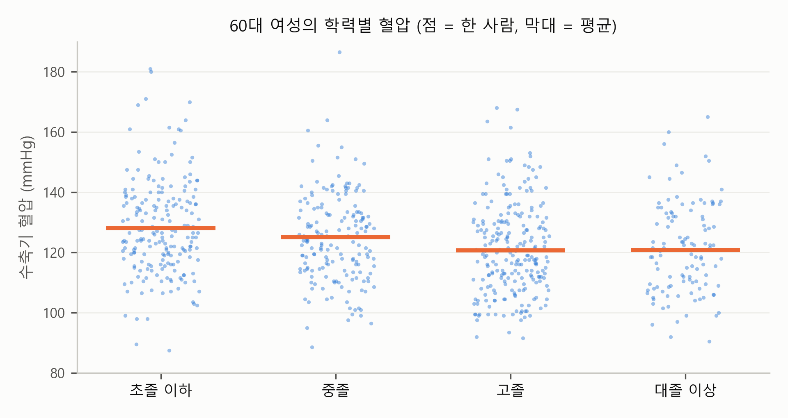
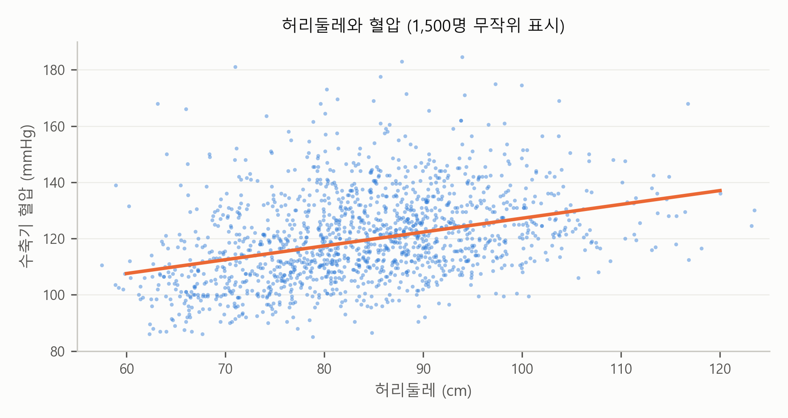
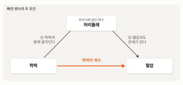
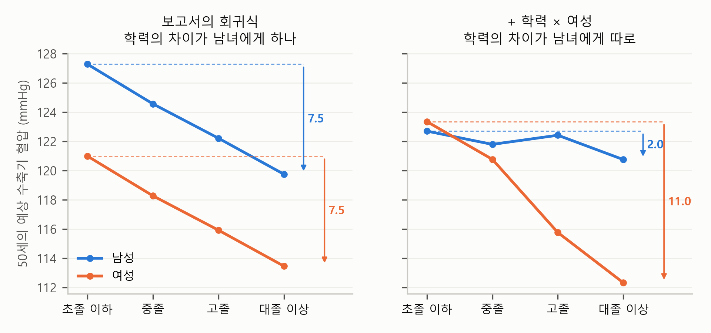

4. 회귀식 밖에 남은 것 — 설명력, 빠진 변수, 남녀의 차이#
앞 절에서 보고서의 계수가 무엇과 무엇을 비교한 숫자인지 보았습니다. 이 장 첫머리의 보고서는 요약의 셋째 줄과 한계 줄에 이렇게 적었습니다.
다만 학력, 성별, 나이가 함께 설명하는 것은 혈압 차이의 21%다(\(R^2\) = 0.212).
학력의 차이가 남녀에 따라 다른지는 보지 않았다.
학력, 성별, 나이가 혈압 차이의 21%를 설명한다면 나머지 79%는 어디에 있을까요? 그리고 보고서는 성별과 나이가 같다면 대졸 이상의 수축기 혈압이 초졸 이하보다 7.5mmHg 낮다고 했는데, 회귀식이 학력의 계수를 남녀에게 똑같이 두었기 때문에 이 7.5는 남성과 여성에게 같은 숫자입니다. 남녀의 학력 차이가 정말 같을까요? 이 절은 보고서의 회귀식 밖에 남은 것을 봅니다.
미리 답부터 말하면, 같은 학력, 같은 성별, 같은 나이 안에서도 사람마다 혈압이 크게 다릅니다. \(R^2\)이 21%에 그치는 것은 그 때문입니다. \(R^2\)이 낮다는 것은 한 사람 한 사람의 혈압을 맞히기 어렵다는 뜻이지, 학력에 따른 평균의 차이가 크게 흔들린다는 뜻은 아닙니다. 회귀식 밖에 있던 변수가 학력의 계수에 몫을 보태고 있을 수 있고, 7.5라는 하나의 숫자는 남녀의 서로 다른 차이를 평균한 것입니다. 차례로 보겠습니다.
평균의 차이와 개인의 퍼짐 — \(R^2\)이 21%라는 것#
보고서의 \(R^2\)은 0.212입니다. 사람마다 혈압이 다른 정도 가운데 학력, 성별, 나이가 함께 설명하는 것이 21%이고, 나머지 79%는 회귀식 밖에 있다는 뜻입니다. 그러면 이 회귀식으로 얻은 학력의 차이 7.5도 믿기 어려운 걸까요?
그림 4-1을 봅시다. 먼저 성별과 나이대를 하나로 고정해, 60대 여성만 골랐습니다. 가로축의 학력별로 거기에 속한 사람의 혈압을 한 사람에 점 하나씩 찍었고, 점이 겹치지 않도록 좌우로 조금씩 흩어 놓았습니다. 그리고 학력마다 가중 평균값을 계산해 주황 막대로 그었습니다.

그림 4-1. 60대 여성의 학력별 수축기 혈압, 점 하나가 한 사람, 주황 막대는 가중 평균.
그림에서 보듯이 평균(주황 막대)은 초졸 이하 128.0에서 대졸 이상 120.9로 학력에 따라 분명히 내려갑니다. 그런데 점들을 보면 같은 학력 안에서도 혈압이 크게 흩어져 있습니다. 대졸 이상 60대 여성만 봐도, 가운데 80%에 속하는 사람의 혈압이 104에서 138까지 퍼져 있습니다. 평균의 차이 7은 이 퍼짐에 비하면 작습니다. 학력을 안다고 해서 그 사람의 혈압을 잘 맞힐 수는 없는 것이죠. 혈압은 유전, 체중, 식습관, 그날의 긴장까지 수많은 것에 따라 달라지니까요.
\(R^2\)이 말하는 것이 바로 이것입니다. 학력, 성별, 나이를 모를 때 혈압이 사람마다 흩어진 정도(표준편차)는 15.3mmHg인데, 회귀식으로 예상한 뒤에도 남는 흩어짐은 13.6mmHg입니다. 개인을 맞히는 데는 그만큼밖에 도움이 되지 않는다는 뜻입니다.
그러나 보고서의 계수가 답하는 질문은 “개인을 맞힐 수 있나”가 아니라 “평균이 집단끼리 얼마나 다른가”입니다. 개인끼리 아무리 흩어져 있어도, 사람이 많으면 평균은 표본을 다시 뽑아도 크게 흔들리지 않습니다. 대졸 이상의 계수 −7.53의 표준오차는 0.90입니다. 한 사람 한 사람은 크게 흩어져 있어도, 5,731명이나 되는 사람의 평균을 비교하니 표본을 다시 뽑아도 1 안팎밖에 흔들리지 않는 것이죠. 그래서 신뢰구간은 −9.3에서 −5.7 사이로, 0에서 한참 떨어져 있습니다. 다중회귀분석 장에서 “믿을 만한 차이”와 “큰 차이”가 다른 질문이라고 했는데, 여기에 하나를 더할 수 있습니다. “개인을 잘 맞히는가”도 또 다른 질문입니다. \(R^2\)이 낮다는 것은 개인을 맞히기 어렵다는 뜻이지, 평균의 차이를 믿을 수 없다는 뜻은 아닙니다.
다만 학력에 따른 평균 혈압의 차이를 믿을 수 있다고 해서, 그 차이가 모두 학력의 몫이라는 뜻은 아닙니다. 회귀식에 넣지 않은 것 가운데 학력과 함께 움직이면서 혈압과도 관계가 있는 것이 있다면, 학력의 계수 −7.53에는 그것의 몫까지 들어 있게 됩니다. 이 문제는 \(R^2\)과는 별개라서, \(R^2\)이 높아도 생길 수 있고 낮아도 생기지 않을 수 있습니다. 다음 소절에서 그런 변수의 예를 하나 봅니다.
💡 팁: AI의 회귀분석 보고서에서 \(R^2\)이 낮다고 결과를 버리지 마세요. \(R^2\)은 개인을 얼마나 맞히는지를, 계수의 표준오차는 평균의 차이가 표본에 따라 얼마나 흔들리는지를 말해 줍니다. 평균의 차이를 믿어도 되는지는 \(R^2\)이 아니라 표준오차와 신뢰구간으로 판단하세요.
변수를 하나 더 — 허리둘레#
회귀식에 허리둘레를 더해 봅시다. 체질량지수(몸무게를 키의 제곱으로 나눈 값, BMI)가 몸 전체의 크기를 본다면, 허리둘레는 배에 쌓인 지방을 봅니다. 흔히 배의 지방이 혈압과 특히 관계가 깊다고 말합니다.
그림 4-2를 봅시다. 가로축에 허리둘레, 세로축에 혈압을 놓고 한 사람을 점 하나로 찍었습니다. 5,617명을 모두 찍으면 점이 서로 겹쳐 제대로 보이지 않으므로 1,500명만 무작위로 골라 찍었습니다. 단, 주황 직선은 모든 사람으로 구한 단순회귀 직선입니다.

그림 4-2. 허리둘레와 수축기 혈압, 점 하나가 한 사람, 주황 직선은 가중치를 적용한 단순회귀 직선.
그림에서 보듯이 점들은 크게 흩어져 있지만, 허리둘레가 굵을수록 혈압이 높은 쪽으로 기울어 있습니다. 허리둘레 하나만으로 단순회귀를 하면 기울기는 0.49, \(R^2\)은 0.14입니다.
허리둘레를 보고서의 회귀식에 더한 것이 표 4-1입니다. 두 열 모두 허리둘레가 관측된 5,617명으로 추정했습니다.
표 4-1. 수축기 혈압의 회귀분석 — 보고서의 회귀식에 허리둘레를 더하기 전과 후
(1) 보고서의 회귀식 |
(2) + 허리둘레 |
|
|---|---|---|
상수항 |
119.68 (1.68) |
90.01 (2.11) |
중졸 |
−2.69 (1.06) |
−1.96 (1.03) |
고졸 |
−5.09 (0.83) |
−3.48 (0.80) |
대졸 이상 |
−7.52 (0.91) |
−5.67 (0.88) |
여성 |
−6.32 (0.40) |
−2.74 (0.42) |
나이 |
0.024 (0.083) |
−0.153 (0.076) |
나이² |
0.0026 (0.0009) |
0.0041 (0.0008) |
허리둘레 (cm) |
0.370 (0.018) |
|
\(R^2\) |
0.211 |
0.273 |
주: 괄호는 표본설계를 반영한 표준오차, 가중치 적용, \(n\) = 5,617. 학력의 기준은 초졸 이하. 두 열 모두 허리둘레가 있는 사람으로 추정해, (1)열의 계수가 보고서와 조금 다르다.
표에서 보듯이 허리둘레의 계수 0.370은 학력, 성별, 나이가 같다면 허리둘레가 1cm 굵은 사람의 혈압이 0.37mmHg 높다는 뜻입니다. 10cm면 3.7mmHg입니다. 그리고 허리둘레를 넣자 대졸 이상의 계수가 −7.52에서 −5.67로 바뀌어, 초졸 이하와의 차이가 7.52에서 5.67로 줄었습니다. 이 자료에서 대졸 이상의 평균 허리둘레는 83.1cm로, 초졸 이하(86.8cm)보다 3.7cm 가늡니다. 허리둘레 1cm에 0.37mmHg이니, 3.7cm면 1.4mmHg쯤 됩니다. 그러니 7.5 가운데 일부는 학력 그 자체가 아니라, 학력이 높은 사람의 허리둘레가 가늘기 때문이었던 것이죠. 허리둘레가 같은 사람끼리 비교하면 학력의 차이는 5.7로 줄어듭니다. 여성과 남성의 차이도 6.32에서 2.74로 줄었습니다.
이것이 앞 소절에서 말한 “학력과 함께 움직이는 것”의 한 예입니다. 회귀식에 넣지 않은 변수가 학력과 함께 움직이고 혈압과도 관계가 있으면, 학력의 계수는 그 변수의 몫까지 담습니다. 보고서의 한계 줄이 “소득, 직업, 체중, 식생활처럼 학력과 함께 움직이는 요인은 반영되지 않았다”고 적은 것도 이 때문입니다. 이 요인들은 대부분 자료에는 들어 있습니다. 단지 보고서의 회귀식에 넣지 않았다는 뜻입니다. 허리둘레처럼 넣어 볼 수 있는 것은 넣어서 학력의 계수가 얼마나 바뀌는지 확인할 수 있습니다. 소득은 앞 절의 표 3-3에서 넣어 보았는데, 학력의 계수는 거의 바뀌지 않았습니다. 다만 식생활처럼 하루치 기록으로만 거칠게 들어 있는 것도 있고(이 장의 마지막 절에서 봅니다), 자료에 아예 없는 요인은 넣어서 확인해 볼 방법조차 없습니다.
그림 4-3은 허리둘레가 학력의 계수에 몫을 보태는 구조를 그린 것입니다. 앞 절의 그림 3-2와 구조가 같습니다.

그림 4-3. 빠진 변수의 두 조건 — 학력과 함께 움직이고, 혈압과도 관계가 있다.
그림에서 보듯이 허리둘레는 두 조건을 모두 갖췄습니다. 학력이 높은 사람일수록 허리둘레가 가늘고(①), 허리둘레가 굵을수록 혈압이 높습니다(②). 둘 가운데 하나라도 없으면 허리둘레를 빼도 학력의 계수는 달라지지 않습니다.
💡 팁: AI의 회귀분석 보고서를 받으면 이렇게 물어보세요. “이 계수에 영향을 줄 만한 빠진 변수가 있을까? 자료에 있다면 넣어서 계수가 어떻게 바뀌는지 보여 줘.”
허리둘레와 체질량지수, 어느 쪽이 혈압과 더 가까울까#
앞 소절에서는 허리둘레를 넣었지만, 몸의 크기를 나타내는 변수로는 체질량지수도 있습니다. 혈압을 설명하는 데는 어느 쪽이 나을까요? 두 변수가 모두 있는 5,561명으로, 보고서의 회귀식에 하나씩, 그리고 둘을 함께 더해 본 것이 표 4-2입니다.
표 4-2. 수축기 혈압의 회귀분석 — 보고서의 회귀식에 허리둘레와 체질량지수를 더하기
(1) + 허리둘레 |
(2) + 체질량지수 |
(3) + 둘 다 |
|
|---|---|---|---|
상수항 |
89.68 (2.14) |
94.72 (1.91) |
93.41 (2.30) |
중졸 |
−1.92 (1.03) |
−1.74 (1.02) |
−1.75 (1.02) |
고졸 |
−3.33 (0.79) |
−3.38 (0.79) |
−3.34 (0.79) |
대졸 이상 |
−5.50 (0.88) |
−5.52 (0.87) |
−5.47 (0.87) |
여성 |
−2.69 (0.42) |
−4.45 (0.39) |
−4.14 (0.47) |
나이 |
−0.173 (0.077) |
−0.145 (0.077) |
−0.153 (0.077) |
나이² |
0.0043 (0.0008) |
0.0045 (0.0008) |
0.0045 (0.0008) |
허리둘레 (cm) |
0.377 (0.018) |
0.058 (0.052) |
|
체질량지수 |
1.053 (0.047) |
0.913 (0.133) |
|
\(R^2\) |
0.275 |
0.283 |
0.284 |
주: 괄호는 표본설계를 반영한 표준오차, 가중치 적용, \(n\) = 5,561. 학력의 기준은 초졸 이하.
표에서 보듯이 \(R^2\)은 허리둘레를 더하면 0.275, 체질량지수를 더하면 0.283입니다. 체질량지수 쪽이 조금 높습니다.
기울기로 비교하려면 조심해야 합니다. 허리둘레의 기울기는 1cm당 0.377, 체질량지수의 기울기는 1당 1.053입니다. 숫자만 보면 체질량지수가 세 배 가까이 큰 것 같지만, 허리둘레 1cm와 체질량지수 1은 재는 잣대부터 다릅니다. 100점 만점 시험의 1점과 10점 만점 쪽지시험의 1점을 그대로 비교할 수 없는 것과 같죠.
그래서 단위가 다른 변수는 표준편차 하나만큼의 차이로 맞춰 비교하는 것이 흔한 방법입니다. 표준편차는 사람들이 평균에서 보통 얼마나 떨어져 있는지를 나타냅니다. 그러니 표준편차 하나만큼의 차이는 그 변수에서 “사람들 사이에 흔히 보는 크기의 차이”입니다. 이 자료에서 가중치를 적용한 허리둘레의 표준편차는 11.4cm, 체질량지수의 표준편차는 4.0입니다. 이제 기울기에 표준편차를 곱하면, 흔히 보는 크기만큼 다를 때 혈압이 얼마나 다른지가 나옵니다. 허리둘레가 표준편차 하나만큼 굵으면 혈압은 0.377 × 11.4 ≈ 4.3mmHg 높고, 체질량지수가 표준편차 하나만큼 높으면 1.053 × 4.0 ≈ 4.2mmHg 높습니다. 같은 잣대로 맞추면 둘은 거의 같습니다.
그러면 둘을 함께 넣으면 어떨까요? (3)열에서 체질량지수의 계수는 0.913으로 크게 변하지 않지만, 허리둘레의 계수는 0.058로 줄어 0과 구별되지 않습니다(표준오차 0.052). 성별, 나이, 학력, 체질량지수가 같다면, 허리둘레가 더 굵은 사람의 혈압이 더 높다고 말하기 어렵다는 뜻입니다. 다만 두 변수는 거의 함께 움직입니다(이 자료에서 허리둘레와 체질량지수의 상관계수는 0.89입니다). 이런 두 변수를 함께 넣으면, 허리둘레의 계수는 체질량지수가 같은 사람들 사이에서 허리둘레가 다를 때 혈압이 얼마나 다른지를 봅니다. 그런데 두 변수가 거의 함께 움직이니, 체질량지수는 같은데 허리둘레만 꽤 다른 사람은 많지 않습니다. 비교에 쓸 수 있는 차이가 적으니 계수가 표본에 따라 크게 흔들리고, 그래서 표준오차가 커집니다. 체질량지수의 계수도 마찬가지입니다. 허리둘레의 표준오차는 0.018에서 0.052로, 체질량지수의 표준오차는 0.047에서 0.133으로, 둘 다 세 배 가까이 커진 것이 그 흔적입니다. 같은 변수라도 무엇과 함께 넣느냐에 따라 답이 달라진다는 것, 다중회귀의 “다른 조건이 같다면”에서 무엇이 같아지는지를 늘 확인해야 한다는 예입니다.
평균이 가리는 것 — 상호작용 하나#
보고서의 회귀식은 학력의 계수를 남녀에게 똑같이 두었습니다. 그래서 남성과 여성에게 따로 나올 수도 있었을 학력의 차이가 하나로 묶여, 7.53이라는 숫자 하나로 나온 것이죠. 그런데 앞 절의 표 3-2에서 60세 이상의 초졸 이하와 대졸 이상의 차이는 남성 4.7, 여성 8.5로 달랐습니다. 보고서의 한계 줄도 “학력의 차이가 남녀에 따라 다른지는 보지 않았다”고 적었습니다.
이것을 확인하려면 다중회귀분석 장에서 소개한 상호작용 항을 하나 넣으면 됩니다. 보고서의 회귀식에 “학력 × 여성”을 더하면, 학력의 계수가 남녀에게 따로 나옵니다. 나이 곡선은 그대로 남녀 공통으로 둡니다. 식으로 쓰면 이렇습니다. 학력은 대졸 이상만 적었습니다.
여기서 \(\cdots\)는 상수항, 중졸과 고졸(그리고 그 둘의 상호작용 항), 나이와 나이²입니다. 여성은 남성이면 0, 여성이면 1인 스위치입니다. 그러니 상호작용 항 \(\text{대졸 이상} \times \text{여성}\)은 대졸 이상인 여성에게만 1이고, 나머지 사람에게는 0입니다. 그래서 대졸 이상과 초졸 이하의 차이는 남녀에게 이렇게 따로 나옵니다.
남성(여성 = 0): \(b_3\)
여성(여성 = 1): \(b_3 + h_3\)
\(h_3\)이 0이면 남녀의 학력 차이가 같고, 0이 아니면 다릅니다. 보고서의 회귀식은 이 항이 없는 식, 즉 \(h_3\)을 0으로 둔 식입니다. 결과는 표 4-3과 같습니다.
표 4-3. 수축기 혈압의 회귀분석 — 보고서의 회귀식에 학력 × 여성을 더하기 전과 후
(1) 보고서의 회귀식 |
(2) + 학력 × 여성 |
|
|---|---|---|
상수항 |
119.59 (1.65) |
114.86 (1.89) |
중졸 |
−2.72 (1.04) |
−0.91 (1.71) |
고졸 |
−5.07 (0.82) |
−0.28 (1.25) |
대졸 이상 |
−7.53 (0.90) |
−1.95 (1.28) |
여성 |
−6.29 (0.40) |
0.65 (1.29) |
중졸 × 여성 |
−1.68 (1.93) |
|
고졸 × 여성 |
−7.31 (1.43) |
|
대졸 이상 × 여성 |
−9.08 (1.35) |
|
나이 |
0.024 (0.082) |
0.035 (0.082) |
나이² |
0.0026 (0.0009) |
0.0024 (0.0009) |
\(R^2\) |
0.212 |
0.222 |
주: 괄호는 표본설계를 반영한 표준오차, 가중치 적용, \(n\) = 5,731. 학력의 기준은 초졸 이하.
표의 (2)열에서 학력의 세 계수는 남성의 학력 차이입니다. 여성의 학력 차이는 학력의 계수에 “학력 × 여성”의 계수를 더한 값입니다. 대졸 이상이라면 남성은 \(\hat{b}_3\) = −1.95, 여성은 \(\hat{b}_3 + \hat{h}_3\) = −1.95 + (−9.08) = −11.03입니다.
표에서 보듯이 성별과 나이가 같을 때, 여성은 학력이 높을수록 혈압이 뚜렷이 낮지만(대졸 이상의 계수 −11.03), 남성은 학력에 따른 차이가 0과 구별되지 않습니다(대졸 이상의 계수 −1.95). 두 숫자의 차이가 상호작용 계수 −9.08이고, 0과 분명히 구별됩니다(\(p\) < 0.001). 그림 4-4는 두 회귀식으로 계산한 예상 혈압을 나란히 놓은 것입니다.

그림 4-4. 나이를 50세로 맞춘 학력별 예상 수축기 혈압. 왼쪽: 보고서의 회귀식. 오른쪽: 학력 × 여성을 더한 회귀식. 화살표는 선마다 초졸 이하에서 대졸 이상까지 내려가는 폭이다.
그림에서 보듯이 왼쪽 패널, 즉 보고서의 회귀식에서는 남녀의 두 선이 나란합니다. 보고서의 그림 오른쪽 패널과 같은 계산이죠. 초졸 이하에서 대졸 이상까지 내려가는 폭은 남녀 모두 7.5입니다. 오른쪽 패널에서 학력 × 여성을 넣자 두 선이 갈라집니다. 여성의 선은 11.0만큼 가파르게 내려가고, 남성의 선은 2.0만큼만 내려가 거의 평평합니다.
그러니 보고서의 −7.53은 “남녀 모두 7.5씩 낮다”기보다, 여성의 큰 차이와 남성의 작은 차이를 하나의 숫자로 평균한 것에 가깝습니다. 보고서의 결론이 틀린 것은 아닙니다. 학력이 높은 사람의 혈압이 평균적으로 낮다는 것은 맞습니다. 다만 숫자 하나로 요약하면 이런 차이가 가려질 수 있고, 그것을 드러내는 가장 간단한 방법이 상호작용 항이라는 것입니다.
💡 팁: 집단마다 효과가 다를 것 같으면 AI에게 “학력과 성별의 상호작용을 넣은 결과도 보여 줘”라고 요청하세요.
요약 — 이 절의 물음과 답
\(R^2\)이 21%밖에 안 되는데, 학력에 따른 차이 7.5를 믿어도 될까? 우연으로 보기는 어렵다. \(R^2\)이 낮은 것은 학력, 성별, 나이가 같은 사람들 사이에서도 혈압이 사람마다 크게 다르기 때문이다. 그래도 사람이 많으면 평균의 차이는 표본을 다시 뽑아도 크게 흔들리지 않는다.
그 7.5는 모두 학력 때문일까? 그렇지 않다. 학력과 함께 움직이면서 혈압과도 관계가 있는 허리둘레를 넣자 7.5가 5.7로 줄었다. 7.5 가운데 일부는 학력이 높은 사람의 허리가 가늘기 때문이었다.
허리둘레와 체질량지수 가운데 어느 쪽이 혈압과 더 가까울까? 허리둘레 1cm와 체질량지수 1은 단위가 달라 기울기를 그대로 비교할 수 없다. 기울기에 그 변수의 표준편차를 곱해 “표준편차 하나만큼 다를 때 혈압이 얼마나 다른가”로 맞추면, 허리둘레는 4.3, 체질량지수는 4.2로 거의 같다.
7.5는 남녀에게 똑같을까? 그렇지 않다. 학력 × 여성을 넣으면 대졸 이상의 혈압은 초졸 이하보다, 여성에서는 11.0 낮지만 남성에서는 2.0 낮아 0과 구별되지 않는다. 보고서의 7.5는 이 둘을 하나의 숫자로 평균한 것에 가깝다.